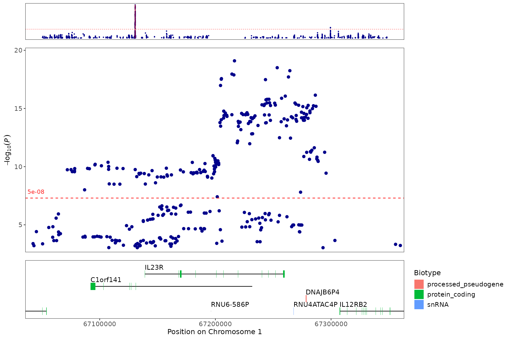
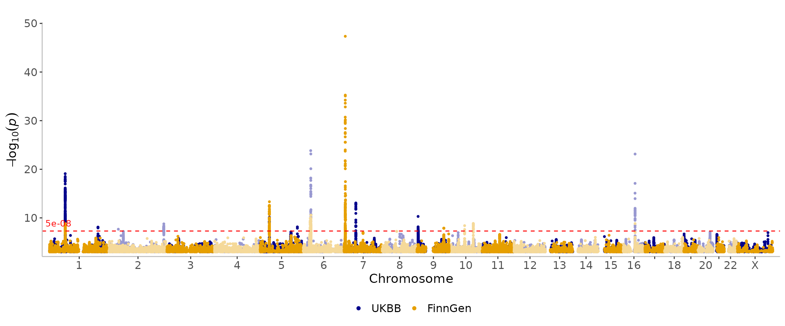

The topr package is a set of functions used to visualize, explore and annotate genetic association results. In particular, using only the chromosome, position and p-value of each variant in results dataframes, topr makes it easy to display gene annotations and multiple traits in a single manhattan plot. Other functionality includes regional plots & locus zoom plots.
Exploration with built-in data
The package comes with 3 sample datasets, namely
CD_UKBB, CD_FINNGEN &
UC_UKBB.
Let’s look at the CD_UKBB dataset:
#> CHROM POS ID REF ALT P OR AF
#> 1 chr1 1006415 rs145588482 TGGCAGCTC T 0.000468758 0.583384 0.01293
#> 2 chr1 1007256 rs76233940 G A 0.000401567 0.579783 0.01301
#> 3 chr1 1341559 rs376494450 C T 0.000151216 1.320130 0.02706
#> 4 chr1 1480224 rs71628972 A G 0.000760160 1.412750 0.01319
#> 5 chr1 2035619 rs111334586 C T 0.000920615 1.413370 0.01209
#> 6 chr1 2213349 rs262695 A G 0.000881453 0.904873 0.32073Note that while there are extra columns in the sample data, the only columns required for plotting are CHROM, POS and P.
Single dataset plotting
manhattan(CD_UKBB)
manhattan(CD_UKBB, annotate=5e-9)
regionplot(CD_UKBB, gene="IL23R")
#> [1] "Zoomed to region: 1:67038907-67359979"
Multiple dataset plotting
In addition to plotting a single dataset, topr can also plot multiple datasets in a single manhattan/region plot.

regionplot(list(CD_UKBB, CD_FINNGEN), gene="IL23R", legend_labels = c("UKBB", "FinnGen"))
#> [1] "Zoomed to region: 1:67038907-67359979"
Other useful functions
Extract lead/index variants from the GWAS dataset (CD_UKBB):
get_lead_snps(CD_UKBB) %>%
dplyr::arrange(P) %>%
head()
#> CHROM POS ID REF ALT P OR AF
#> 6.1 chr6 31660620 rs148844907 T A 1.47082e-24 2.433450 0.01034
#> 6.2 chr6 32205822 rs138753323 T C 7.13519e-24 1.844850 0.02882
#> 16 chr16 50729867 rs2066847 G GC 7.36933e-24 2.142320 0.01588
#> 1.1 chr1 67216513 rs11576518 G A 8.03684e-20 0.777437 0.44081
#> 6.3 chr6 32708532 rs144614916 A C 1.27821e-15 1.801210 0.01997
#> 7 chr7 50274703 rs2219345 T G 8.52335e-14 1.230940 0.59313Annotate the lead/index variants with their nearest gene & biotype:
get_lead_snps(CD_UKBB) %>%
annotate_with_nearest_gene() %>%
dplyr::arrange(P) %>%
head()
#> CHROM POS ID REF ALT P OR AF Gene_Symbol
#> 6.1 chr6 31660620 rs148844907 T A 1.47082e-24 2.433450 0.01034 C6orf47
#> 6.2 chr6 32205822 rs138753323 T C 7.13519e-24 1.844850 0.02882 NOTCH4
#> 16 chr16 50729867 rs2066847 G GC 7.36933e-24 2.142320 0.01588 NOD2
#> 1.1 chr1 67216513 rs11576518 G A 8.03684e-20 0.777437 0.44081 C1orf141
#> 6.3 chr6 32708532 rs144614916 A C 1.27821e-15 1.801210 0.01997 MTCO3P1
#> 7 chr7 50274703 rs2219345 T G 8.52335e-14 1.230940 0.59313 IKZF1
#> biotype
#> 6.1 protein_coding
#> 6.2 protein_coding
#> 16 protein_coding
#> 1.1 protein_coding
#> 6.3 unprocessed_pseudogene
#> 7 protein_codingGet genomic coordinates for a gene (topr uses genome build GRCh38.p13 by default):
get_gene_coords("IL23R")
#> chrom gene_start gene_end gene_symbol biotype
#> 1 1 67138907 67259979 IL23R protein_codingGet genomic coordinates for a gene using genome build GRCh37 instead.
get_gene_coords("IL23R", build="37")
#> chrom gene_start gene_end gene_symbol biotype
#> 1 1 67632083 67725662 IL23R protein_codingGet snps within a region:
get_snps_within_region(CD_UKBB, region="chr1:67138906-67259979") %>%
head()
#> CHROM POS ID REF ALT P OR AF
#> 1 chr1 67139451 rs10789224 T C 3.11449e-09 0.837104 0.31415
#> 2 chr1 67140456 rs1158199 T C 3.65767e-04 1.101210 0.53528
#> 3 chr1 67141399 rs9729046 C G 3.91140e-06 0.875025 0.34477
#> 4 chr1 67141452 rs736197 G T 3.91082e-06 0.875021 0.34477
#> 5 chr1 67142417 rs11582178 C T 5.10929e-10 0.613183 0.04768
#> 6 chr1 67143664 rs963427 A G 3.36454e-06 0.874194 0.34362Get the top variant on a chromosome:
get_top_snp(CD_UKBB, chr="chr1")
#> CHROM POS ID REF ALT P OR AF
#> 1 chr1 67216513 rs11576518 G A 8.03684e-20 0.777437 0.44081Create a snpset by extracting the top/lead variants from the CD_UKBB dataset and overlapping variants (by position) in the CD_FINNGEN dataset.
get_snpset(CD_UKBB, CD_FINNGEN)
#> $matched
#> CHROM POS REF1 ALT1 P1 E1 REF2 ALT2 P2
#> 1 1 206770623 C A 7.85424e-09 0.2021732 C A 1.22098e-04
#> 2 16 50729867 G GC 7.36933e-24 0.7618894 G GC 1.49882e-09
#> 3 5 40439961 C T 7.42668e-11 0.1818381 C T 2.80350e-13
#> 4 5 159399784 C A 7.12812e-09 0.1680029 C A 2.37432e-05
#> 5 1 67216513 A G 8.03684e-20 0.2517527 A G 1.04321e-08
#> E2 ID Gene_Symbol biotype
#> 1 0.130601 rs3024493 IL10 protein_coding
#> 2 0.530875 rs2066847 NOD2 protein_coding
#> 3 0.187984 rs7713270 TTC33 protein_coding
#> 4 0.114921 rs6871626 IL12B protein_coding
#> 5 0.146556 rs11576518 C1orf141 protein_coding
#>
#> $snp_not_found_in_df2
#> CHROM POS REF1 ALT1 P1 E1 ID_tmp
#> 2.2 2 39590816 G C 2.13296e-08 0.1589079 2_39590816
#> 2.1 2 233237298 A C 1.70216e-09 0.1628839 2_233237298
#> 6.1 6 31660620 T A 1.47082e-24 0.8893100 6_31660620
#> 6.2 6 32205822 T C 7.13519e-24 0.6123980 6_32205822
#> 6.3 6 32708532 A C 1.27821e-15 0.5884587 6_32708532
#> 7 7 50274703 T G 8.52335e-14 0.2077781 7_50274703
#> 9 9 4984530 G C 5.03745e-11 -0.1833112 9_4984530
#>
#> $snp_found_different_alleles_in_df2
#> [1] CHROM POS REF1 ALT1 P1 E1 REF2 ALT2 P2 E2
#> [11] ID ID_tmp
#> <0 rows> (or 0-length row.names)